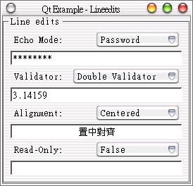

QLineEdit提供一個文字輸入欄位，可以輸入文字或數字，我們可以對輸入作驗證，或是設定為一般顯示、密碼顯示等等；這邊的範例來自Qt的線上說明文件，可展示QLineEdit的一些基本功能。
首先編輯lineedits.h定義檔：
#ifndef LINEDITS_H
#define LINEDITS_H
#include <qgroupbox.h>
class QLineEdit;
class QComboBox;
class LineEdits : public QGroupBox
{
Q_OBJECT
public:
LineEdits( QWidget *parent = 0, const char *name = 0 );
protected:
QLineEdit *lined1, *lined2, *lined3, *lined4;
QComboBox *combo1, *combo2, *combo3, *combo4;
protected slots:
void slotEchoChanged( int );
void slotValidatorChanged( int );
void slotAlignmentChanged( int );
void slotReadOnlyChanged( int );
};
#endif
再來編輯lineedits.cpp：
#include "lineedits.h"
#include <qlineedit.h>
#include <qcombobox.h>
#include <qframe.h>
#include <qvalidator.h>
#include <qlabel.h>
#include <qlayout.h>
#include <qhbox.h>
/*
* Constructor
*
* Creates child widgets of the LineEdits widget
*/
LineEdits::LineEdits( QWidget *parent, const char *name )
: QGroupBox( 0, Horizontal, "Line edits", parent, name )
{
setMargin( 10 );
QVBoxLayout* box = new QVBoxLayout( layout() );
QHBoxLayout *row1 = new QHBoxLayout( box );
row1->setMargin( 5 );
// Create a Label
QLabel* label = new QLabel( "Echo Mode: ", this);
row1->addWidget( label );
// Create a Combobox with three items...
combo1 = new QComboBox( FALSE, this );
row1->addWidget( combo1 );
combo1->insertItem( "Normal", -1 );
combo1->insertItem( "Password", -1 );
combo1->insertItem( "No Echo", -1 );
// ...and connect the activated() SIGNAL
// with the slotEchoChanged() SLOT to be able
// to react when an item is selected
connect( combo1, SIGNAL( activated( int ) ),
this, SLOT( slotEchoChanged( int ) ) );
// insert the first LineEdit
lined1 = new QLineEdit( this );
box->addWidget( lined1 );
// another widget which is used for layouting
QHBoxLayout *row2 = new QHBoxLayout( box );
row2->setMargin( 5 );
// and the second label
label = new QLabel( "Validator: ", this );
row2->addWidget( label );
// A second Combobox with again three items...
combo2 = new QComboBox( FALSE, this );
row2->addWidget( combo2 );
combo2->insertItem( "No Validator", -1 );
combo2->insertItem( "Integer Validator", -1 );
combo2->insertItem( "Double Validator", -1 );
// ...and again the activated() SIGNAL gets connected with a SLOT
connect( combo2, SIGNAL( activated( int ) ),
this, SLOT( slotValidatorChanged( int ) ) );
// and the second LineEdit
lined2 = new QLineEdit( this );
box->addWidget( lined2 );
// yet another widget which is used for layouting
QHBoxLayout *row3 = new QHBoxLayout( box );
row3->setMargin( 5 );
// we need a label for this too
label = new QLabel( "Alignment: ", this );
row3->addWidget( label );
// A combo box for setting alignment
combo3 = new QComboBox( FALSE, this );
row3->addWidget( combo3 );
combo3->insertItem( "Left", -1 );
combo3->insertItem( "Centered", -1 );
combo3->insertItem( "Right", -1 );
// ...and again the activated() SIGNAL gets connected with a SLOT
connect( combo3, SIGNAL( activated( int ) ),
this, SLOT( slotAlignmentChanged( int ) ) );
// and the third lineedit
lined3 = new QLineEdit( this );
box->addWidget( lined3 );
// last widget used for layouting
QHBox *row4 = new QHBox( this );
box->addWidget( row4 );
row4->setMargin( 5 );
// last label
(void)new QLabel( "Read-Only: ", row4 );
// A combo box for setting alignment
combo4 = new QComboBox( FALSE, row4 );
combo4->insertItem( "False", -1 );
combo4->insertItem( "True", -1 );
// ...and again the activated() SIGNAL gets connected with a SLOT
connect( combo4, SIGNAL( activated( int ) ),
this, SLOT( slotReadOnlyChanged( int ) ) );
// and the last lineedit
lined4 = new QLineEdit( this );
box->addWidget( lined4 );
// give the first LineEdit the focus at the beginning
lined1->setFocus();
}
/*
* SLOT slotEchoChanged( int i )
*
* i contains the number of the item which the user has been chosen in the
* first Combobox. According to this value, we set the Echo-Mode for the
* first LineEdit.
*/
void LineEdits::slotEchoChanged( int i )
{
switch ( i ) {
case 0:
lined1->setEchoMode( QLineEdit::Normal );
break;
case 1:
lined1->setEchoMode( QLineEdit::Password );
break;
case 2:
lined1->setEchoMode( QLineEdit::NoEcho );
break;
}
lined1->setFocus();
}
/*
* SLOT slotValidatorChanged( int i )
*
* i contains the number of the item which the user has been chosen in the
* second Combobox. According to this value, we set a validator for the
* second LineEdit. A validator checks in a LineEdit each character which
* the user enters and accepts it if it is valid, else the character gets
* ignored and not inserted into the lineedit.
*/
void LineEdits::slotValidatorChanged( int i )
{
switch ( i ) {
case 0:
lined2->setValidator( 0 );
break;
case 1:
lined2->setValidator( new QIntValidator( lined2 ) );
break;
case 2:
lined2->setValidator( new QDoubleValidator( -999.0, 999.0, 2,
lined2 ) );
break;
}
lined2->setText( "" );
lined2->setFocus();
}
/*
* SLOT slotAlignmentChanged( int i )
*
* i contains the number of the item which the user has been chosen in
* the third Combobox. According to this value, we set an alignment
* third LineEdit.
*/
void LineEdits::slotAlignmentChanged( int i )
{
switch ( i ) {
case 0:
lined3->setAlignment( QLineEdit::AlignLeft );
break;
case 1:
lined3->setAlignment( QLineEdit::AlignCenter );
break;
case 2:
lined3->setAlignment( QLineEdit::AlignRight );
break;
}
lined3->setFocus();
}
/*
* SLOT slotReadOnlyChanged( int i )
*
* i contains the number of the item which the user has been chosen in
* the fourth Combobox. According to this value, we toggle read-only.
*/
void LineEdits::slotReadOnlyChanged( int i )
{
switch ( i ) {
case 0:
lined4->setReadOnly( FALSE );
break;
case 1:
lined4->setReadOnly( TRUE );
break;
}
lined4->setFocus();
}
最後是主函式main.cpp：
#include "lineedits.h"
#include <qapplication.h>
int main( int argc, char **argv )
{
QApplication a( argc, argv );
LineEdits lineedits;
lineedits.setCaption( "Qt Example - Lineedits" );
a.setMainWidget( &lineedits );
lineedits.show();
return a.exec();
}
其中有關於QComboBox，上一個範例已經介紹過了，這邊不再多作介紹；這個例子是使用QComboBox來設定QLineEdit的顯示與功能，基本上非常簡單，我們說明重要的幾個片段。
在這個例子中重要的是QComboBox的Signal -
activated(int)，當ComboBox的一個項目被選取時，Signal -
activated(int)會發出並帶有選項的數值訊息，選項的索引是由0開始，在下後的程式中，我們就可以使用switch來比對並作對應的動作：
connect( combo1, SIGNAL( activated( int ) ),
this, SLOT( slotEchoChanged( int ) ) );
我們使用switch來比對Signal -
activated(int)所傳來的整數訊息，並作出對應的處理，setEchoMode()可以設定輸入文字的顯示方式，有一般顯示
（Normal）、密碼顯示（Password）與不回應文字輸入（NoEcho），密碼顯示會使用*來回應使用者的輸入：
void LineEdits::slotEchoChanged( int i )
{
switch ( i ) {
case 0:
lined1->setEchoMode( QLineEdit::Normal );
break;
case 1:
lined1->setEchoMode( QLineEdit::Password );
break;
case 2:
lined1->setEchoMode( QLineEdit::NoEcho );
break;
}
lined1->setFocus();
}
setValidator()設定是否對欄位的輸入進行驗證，設定為0表示不作驗證，QIntValidator用於設定整數的驗
證方式，父類別為line2，QDoubleValidator用於浮點數的驗證，範圍為-999.0至+999.0，小數位數為2位（線上手冊是這麼寫
的，但是實際測試卻只能驗證是否為浮點數，不能限制上下限與小數位數？）：
void LineEdits::slotValidatorChanged( int i )
{
switch ( i ) {
case 0:
lined2->setValidator( 0 );
break;
case 1:
lined2->setValidator( new QIntValidator( lined2 ) );
break;
case 2:
lined2->setValidator( new QDoubleValidator( -999.0, 999.0, 2,
lined2 ) );
break;
}
lined2->setText( "" );
lined2->setFocus();
}
設定QLineEdit的文字對齊方式，有置左對齊（AlignLeft）、置中對齊（AlignCenter）與置右對齊（AlignRight）：
void LineEdits::slotAlignmentChanged( int i )
{
switch ( i ) {
case 0:
lined3->setAlignment( QLineEdit::AlignLeft );
break;
case 1:
lined3->setAlignment( QLineEdit::AlignCenter );
break;
case 2:
lined3->setAlignment( QLineEdit::AlignRight );
break;
}
lined3->setFocus();
}
setReadOnly()設定QLineEdit的欄位是否可編輯：
void LineEdits::slotReadOnlyChanged( int i )
{
switch ( i ) {
case 0:
lined4->setReadOnly( FALSE );
break;
case 1:
lined4->setReadOnly( TRUE );
break;
}
lined4->setFocus();
}
程式很簡單，以下是執行的結果：

|
|